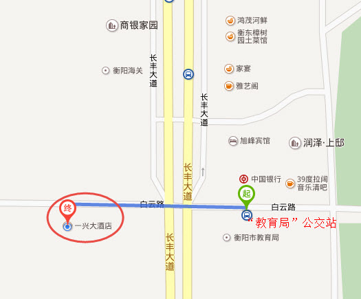

Yang & Qu 's wedding invitation Love as wine, magnificent heart. 您的浏览器不支持 audio 标签. 时间: 2016-01-01 12:002016年1月1日元旦，中午12:00 地点: 湖南省衡阳市一兴大酒店酒店地址：衡阳市华新开发区白云路20号 乘车路线：乘公交在“教育局”站下车，过马路往前直走50米  联系方式: 15819805018微信同上